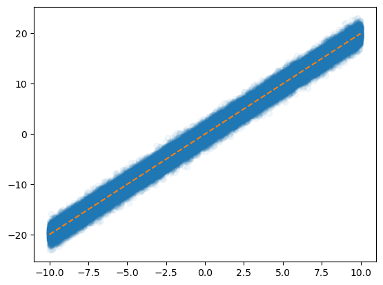
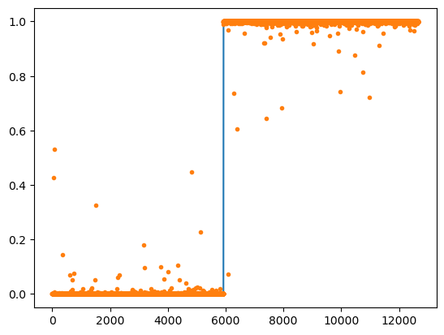
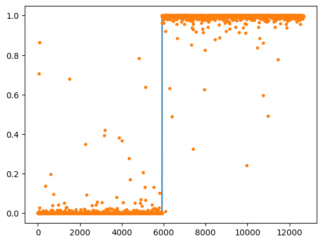

import torch
import matplotlib.pyplot as plt
from fastai.data.all import *
import torchvisionStochastic Gradient Descent
1. Imports
2. Stochastic Gradient Descent
전체 데이터셋이 아니라 일부 샘플(1개 또는 소수의 샘플)만 사용하여 파라미터를 업데이트하는 것
- SGD가 왜 필요해?
GPU는 사기니까 GPU만 사용하면 될 것 같음 그런데 GPU는 너무 비싸다… 80GB에 3000만원씩 하기때문…
80GB는 금방 차버리니까 그럼 GPU메모리를 어떻게든 아껴서 잘 사용해야하네?
어떻게 해야할까?
x = torch.linspace(-10,10,100000).reshape(-1,1)
eps = torch.randn(100000).reshape(-1,1)
y = x*2 + eps plt.plot(x,y,'o',alpha=0.05)
plt.plot(x,2*x,'--')
그렇게 어려운 계산도 아닌데 10만개의 데이터를 모두 GPU로 보내서 연산시키면 너무 낭비라는 생각이 듦…
A. X,y 데이터를 모두 굳이 GPU에 넘겨야 하는가?
데이터셋을 짝홀로 나누어서 번갈아가면서 GPU에 올렸다 내렸다하면 안되나?
- 아래의 알고리즘을 생각해보자.
- 데이터를 반으로 나누고
- 짝수 obs의 x,y,net의 모든 parameters을 GPU에 올린다
- yhat,loss,grad,update 수행
- 홀수 obs의 x,y를 GPU메모리에서 내린다. 그리고 짝수 obs의 x,y를 GPU메모리에 올린다
- yhat,loss,grad,update 수행
- 반복
B. 미니배치 경사하강법
그럼 홀수 짝수로 나누는 건 2로 나누는 건데 굳이 2로만 나누어야하나? 더 쪼갤 수 있지 않나?
- gradient descent : 10개의 sample data가 있다고 할 때 모든 sample을 이용하여 slope계산
- stochastic gradient descent with batch size = 1 : 10개의 smaple data를 하나씩으로 모두 쪼개서 slope계산
stochastic gradient descent with batch size = 1의 경우는 epoc을 10번 하면 총 100번 epoc을 돌리는 것과 같다
- stochastic gradient descent : m개의 sample을 이용하여 slope 계산
그럼 stochastic gradient descent의 경우는 epoc을 10번 하면 총 40번 epoc을 돌리는 것과 같다.
C. Dataset(ds) , DataLoader(dl)
stochastic gradient descent를 수행하기 위해서 파이토치에서는 ds와 dl라는 오브젝트를 준비했다.
x=torch.tensor(range(10)).float().reshape(-1,1)
y=torch.tensor([1.0]*5+[0.0]*5).reshape(-1,1)
torch.concat([x,y],axis=1)tensor([[0., 1.],
[1., 1.],
[2., 1.],
[3., 1.],
[4., 1.],
[5., 0.],
[6., 0.],
[7., 0.],
[8., 0.],
[9., 0.]])ds = torch.utils.data.TensorDataset(x,y)dir(ds)를 살펴보면 __getitem__이 있다 이러면 섭스크립터블하다는 것이다.
ds.tensors # 튜플 언패킹으로 뽑을 수 있을 거 같음(tensor([[0.],
[1.],
[2.],
[3.],
[4.],
[5.],
[6.],
[7.],
[8.],
[9.]]),
tensor([[1.],
[1.],
[1.],
[1.],
[1.],
[0.],
[0.],
[0.],
[0.],
[0.]]))ds[0] , (x,y)[0]((tensor([0.]), tensor([1.])),
tensor([[0.],
[1.],
[2.],
[3.],
[4.],
[5.],
[6.],
[7.],
[8.],
[9.]]))그런데 일반적인 튜플의 인덱싱과는 다르게 동작함
dl=torch.utils.data.DataLoader(ds,batch_size=3)
dl<torch.utils.data.dataloader.DataLoader at 0x7fdf9fc2fec0>dl : 섭스크립터블하지 않지만 이터러블 함 즉, for문을 사용할 수 있음
for xi,yi in dl:
print(xi,yi)tensor([[0.],
[1.],
[2.]]) tensor([[1.],
[1.],
[1.]])
tensor([[3.],
[4.],
[5.]]) tensor([[1.],
[1.],
[0.]])
tensor([[6.],
[7.],
[8.]]) tensor([[0.],
[0.],
[0.]])
tensor([[9.]]) tensor([[0.]])10을 3으로 나누면 마지막에 하나 남는데 그건 어떻게 해? -> 그냥 하나 남으면 그것만 계산한다
D. ds,dl을 이용한 MNIST구현
- 목표 : 확률적경사하강법과 그냥 경사하강법의 성능을 ’동일 반복횟수’로 비교해보자
- 그냥 경사하강법 - mini-batch쓰지 않는 학습
path = untar_data(URLs.MNIST)
X0 = torch.stack(([torchvision.io.read_image(str(fname)) for fname in (path/'training/0').ls()]))
X1 = torch.stack(([torchvision.io.read_image(str(fname)) for fname in (path/'training/1').ls()]))
X = torch.concat([X0,X1],axis=0).reshape(-1,1*28*28)/255
y = torch.tensor([0.0]*len(X0) + [1.0]*len(X1)).reshape(-1,1)
torch.manual_seed(21345)
net = torch.nn.Sequential(
torch.nn.Linear(1*28*28,32),
torch.nn.ReLU(),
torch.nn.Linear(32,1),
torch.nn.Sigmoid()
)
loss_fn = torch.nn.BCELoss()
optimizr = torch.optim.Adam(net.parameters())
for epoc in range(700):
yhat = net(X)
loss = loss_fn(yhat,y)
loss.backward()
optimizr.step()
optimizr.zero_grad()
((yhat > 0.5)*1.0 == y).float().mean()tensor(0.9998)plt.plot(y)
plt.plot(yhat.data,'.')
- ‘확률적’ 경사하강법 - mini-batch사용하는 학습
ds = torch.utils.data.TensorDataset(X,y)
dl = torch.utils.data.DataLoader(ds,batch_size=2048)
path = untar_data(URLs.MNIST)
X0 = torch.stack(([torchvision.io.read_image(str(fname)) for fname in (path/'training/0').ls()]))
X1 = torch.stack(([torchvision.io.read_image(str(fname)) for fname in (path/'training/1').ls()]))
X = torch.concat([X0,X1],axis=0).reshape(-1,1*28*28)/255
y = torch.tensor([0.0]*len(X0) + [1.0]*len(X1)).reshape(-1,1)
torch.manual_seed(21345)
net = torch.nn.Sequential(
torch.nn.Linear(1*28*28,32),
torch.nn.ReLU(),
torch.nn.Linear(32,1),
torch.nn.Sigmoid()
)
loss_fn = torch.nn.BCELoss()
optimizr = torch.optim.Adam(net.parameters())
for epoc in range(100):
for xi,yi in dl:
netout = net(xi)
loss = loss_fn(netout,yi)
loss.backward()
optimizr.step()
optimizr.zero_grad()
((net(X) > 0.5)*1.0 == y).float().mean()tensor(0.9992)plt.plot(y)
plt.plot(yhat.data,'.')
- GPU를 활용하는 ‘확률적’ 경사하강법 - 실제로는 이게 최종 알고리즘
ds = torch.utils.data.TensorDataset(X,y)
dl = torch.utils.data.DataLoader(ds,batch_size=2048)
path = untar_data(URLs.MNIST)
X0 = torch.stack(([torchvision.io.read_image(str(fname)) for fname in (path/'training/0').ls()]))
X1 = torch.stack(([torchvision.io.read_image(str(fname)) for fname in (path/'training/1').ls()]))
X = torch.concat([X0,X1],axis=0).reshape(-1,1*28*28)/255
y = torch.tensor([0.0]*len(X0) + [1.0]*len(X1)).reshape(-1,1)
torch.manual_seed(21345)
net = torch.nn.Sequential(
torch.nn.Linear(1*28*28,32),
torch.nn.ReLU(),
torch.nn.Linear(32,1),
torch.nn.Sigmoid()
).to("cuda:0")
loss_fn = torch.nn.BCELoss()
optimizr = torch.optim.Adam(net.parameters())
for epoc in range(100):
for xi,yi in dl:
loss = loss_fn(net(xi.to("cuda:0")),yi.to("cuda:0"))
loss.backward()
optimizr.step()
optimizr.zero_grad()
net.to("cpu")
((net(X) > 0.5)*1.0 == y).float().mean()tensor(0.9992)plt.plot(y)
plt.plot(net(X).data.data,'.')
5. 다중클래스 분류
A. 결론
- 2개의 class를 구분하는 게 아니라 k개의 class를 구분해야 한다면?
y의 형태 : (n,) vector + int형 // (n,k) one-hot encoded matrix + float형
손실함수 : torch.nn.BCEWithLogitsLoss, -> torch.nn.CrossEntropyLoss
마지막층의 선형변환 : torch.nn.Linear(?,1) -> torch.nn.Linear(?,k)
마지막층의 활성화 : NONE -> NONE (손실함수에 이미 포함되어있음)
B. 실습 : 3개의 클래스를 구분
## Step1: 데이터준비
path = untar_data(URLs.MNIST)
X0 = torch.stack([torchvision.io.read_image(str(fname)) for fname in (path/'training/0').ls()])
X1 = torch.stack([torchvision.io.read_image(str(fname)) for fname in (path/'training/1').ls()])
X2 = torch.stack([torchvision.io.read_image(str(fname)) for fname in (path/'training/2').ls()])
X = torch.concat([X0,X1,X2]).reshape(-1,1*28*28)/255
y = torch.tensor([0]*len(X0) + [1]*len(X1)+ [2]*len(X2))
## Step2: 학습가능한 오브젝트 생성
torch.manual_seed(43052)
net = torch.nn.Sequential(
torch.nn.Linear(784,32),
torch.nn.ReLU(),
torch.nn.Linear(32,3), # class = 3
# torch.nn.Softmax()
)
loss_fn = torch.nn.CrossEntropyLoss()
optimizr = torch.optim.Adam(net.parameters())
## Step3: 적합
for epoc in range(100):
## step1
netout = net(X)
## step2
loss = loss_fn(netout,y)
## step3
loss.backward()
## step4
optimizr.step()
optimizr.zero_grad()
## Step4: 적합 (혹은 적합결과확인)
(netout.argmax(axis=1) == y).float().mean()tensor(0.9827)파이토치에서 CrossEntropyLoss를 사용하면 one-hot 인코딩을 해준다. float형도 자동으로 맞춰줌
D.정리
- 결론
- 소프트맥스는 시그모이드의 확장이다.
- 클래스의 수가 2개일 경우에는 (Sigmoid, BCEloss) 조합을 사용해야 하고 클래스의 수가 2개보다 클 경우에는 (Softmax, CrossEntropyLoss) 를 사용해야 한다.
- 그런데 사실.. 클래스의 수가 2개일 경우일때 (Softmax, CrossEntropyLoss)를 사용해도 그렇게 큰일나는것은 아니다. (그냥 좀 비효율적인 느낌이 드는 것 뿐임. 흑백이미지를 칼라잉크로 출력하는 느낌)